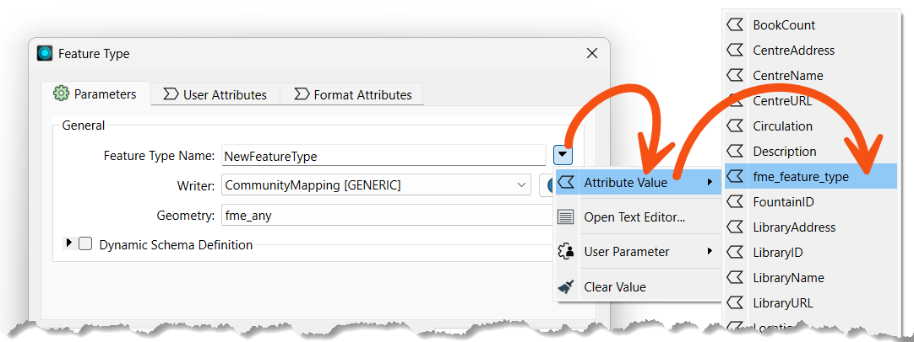
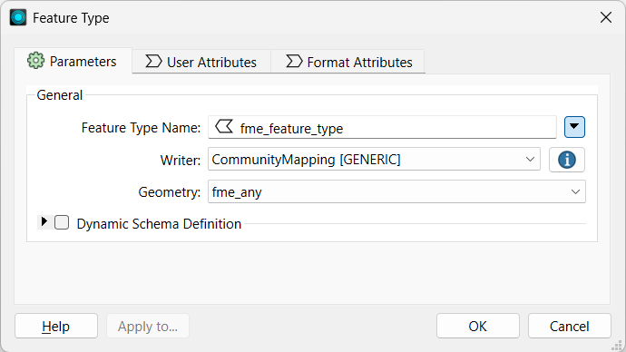
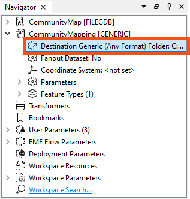
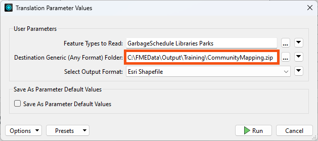
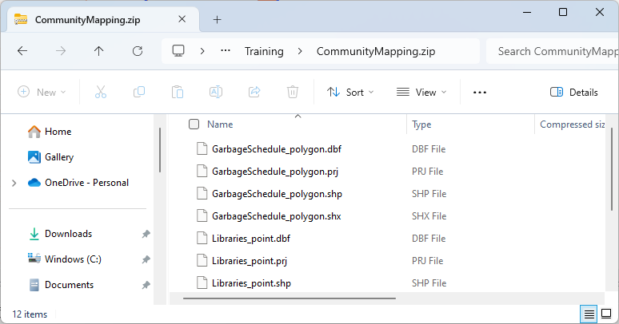

Learning Objectives
After completing this lesson, you’ll be able to:
- Use a feature type fanout on fme_feature_type to return features to their original layer.
- Use a .zip extension to create zipped output datasets.
Resources
Introduction
As a resident FME expert, you are often asked to translate data (particularly the community map) between formats. You realize it would be much simpler if you created a workspace to do this - regardless of format - and let the end-users carry out the translation themselves. You've started building a workspace, but now you need to add fanouts to ensure the users receive data in the form they expect.

This would make an excellent use for an FME Flow Data Download service in the future, but for now, we'll let the users run the workspace in FME Workbench. See the FME Flow Authoring learning path to learn more about creating self-serve data download workflows.
1) Start Workbench
Open the starting workspace (C:\FMEData\Workspaces\AdvancedDataTransformation\exercise-use-fanouts.fmw) in FME Workbench (2024.1 or later).
2) Explore the Workspace
You can see from the Navigator that this workspace reads in a community map file Geodatabase and writes out to the Generic format:

The workspace provides four format choices to the user, controlled by User Parameters > OutputFormat.
The Generic format lets the user choose which format to write. You can learn more in the documentation.
The reader feature type is merged, meaning it will read all features into one stream rather than individual feature types per feature class. You can tell the feature type is configured that way because it is named <All>. The writer feature type is set to write to a single feature type named NewFeatureType.

Examining the User Parameters shows that the workspace lets users choose which feature types to read. The user configured it this way by linking the FEATURE_TYPES parameter to the Reader Parameters > Features To Read > Feature Types to Read parameter.
If the workspace is run now, the user can choose the feature types and format but will get the results back in a single layer/file. This result could be more optimal. Let's change the workspace so the user gets back separate layers/files for each feature type. We'll also zip the output for convenience.
3) Set Feature Type Fanout
We want to output features to their original table. To do this, we need to know where they came from, and that is obtained from a format attribute called fme_feature_type.
Inspect the properties for the writer feature type. Set a fanout by choosing fme_feature_type as the attribute setting the Feature Type Name.

Your dialog should look like this:

Click OK. The name of the feature type on the canvas will change to <@Value(fme_feature_type)> to reflect the use of a fanout.
4) Create a Zipped Output
In the Navigator, find the Destination Generic (Any Format) Folder writer parameter:

We will create a zipped folder to contain all of our files. Double-click the parameter and set the location of an output folder (such as C:\FMEData\Output\Training), then at the end, type \CommunityMapping.zip.
Your full parameter value will look something like this:
C:\FMEData\Output\Training\CommunityMapping.zip
This will create a zipped file called CommunityMapping.
This is also where we could set up a dataset fanout to multiple zip files, if we wished. However, because this workspace can accept one or more feature types, configuring the fanout expression with Conditional Values would take too long for this example.
Learn more in the documentation.
5) Save and Run Workspace
Save the workspace and then run it with Run > Prompt for Parameters enabled. When prompted, select some source tables to read (include at least the GarbageSchedule plus one other). Set Esri Shapefile as the format to write. Ensure your path reflects that you will be writing a zipped file:

Click the Run button to run the translation. Examine the output folder. A zipped folder has been created which contains all the selected tables that have been written back to Shapefile format:

Now you have a solution that almost anyone can open and run for themselves. Also, if you publish the workspace to FME Flow, the same user parameters will be available.
Did you notice that FME handled the different geometry types and output the files with the geometry as part of the name? It’s a Shapefile format thing. FME can never – and will never – write more than one geometry type to the same Shapefile .shp file.
The one drawback with the output is that each Shapefile has all attributes of all source tables. To avoid that outcome, you would need to use a dynamic translation. We cover those later in this learning path.